Customize
Edit Claudius from inside Claudius.
Hit New customization
and Claudius mirrors its own source into a private folder, opens a
workspace pointing there, and auto-spawns a preview on a separate
port. Chat with the agent like normal — it edits the mirror,
not the running app. When you’re happy, hit
Publish. If anything breaks, hit
Revert — or run
make claudius-revert
from a terminal if the UI itself is broken.
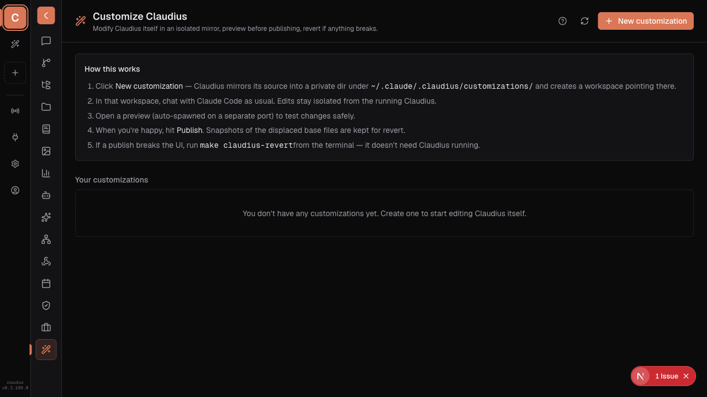
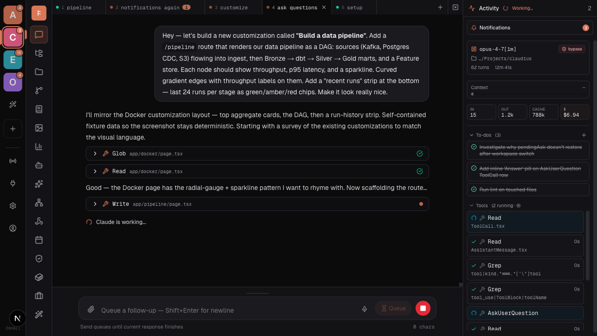
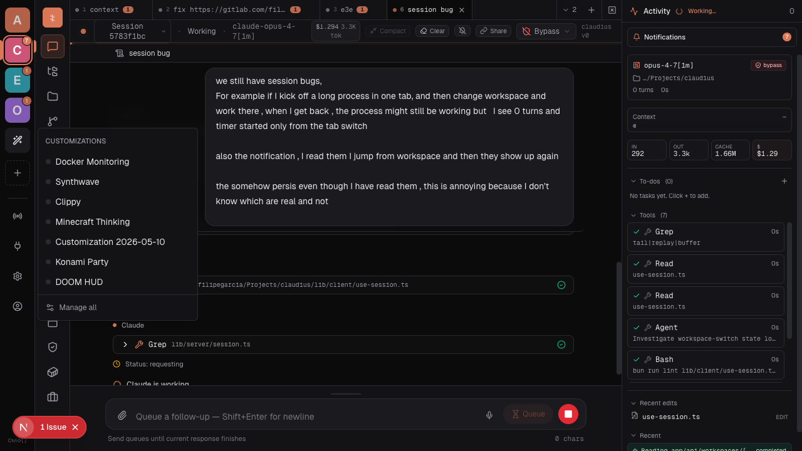
Nine demos, one afternoon
Ship a SQL console. Or ship Clippy.
A DataGrip-style SQL console, a Jupyter notebook runner, a live DAG dashboard, a Docker monitor, a synthwave repaint, a DOOM-themed Cost page, a Minecraft parkour clip next to the thinking block, the Konami code, a paperclip mascot — all built by asking the agent. Each lives in its own mirror, toggle on, toggle off, independent of the others.
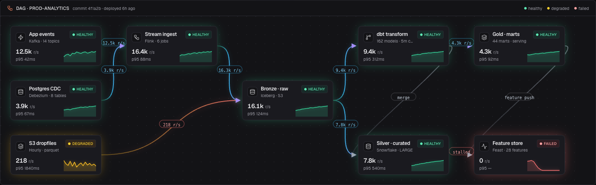
/pipeline route — full DAG observability in your browser. Nine stages from Kafka to Feature store, gradient-curve edges with throughput labels, per-node sparklines, p95 latency, and a run-history strip showing the last 24 runs as green/amber/red chips. The failing stage glows red — you spot it before the on-call gets paged.![A DataGrip-style SQL console inside Claudius: tab strip across the top with four open consoles (screening, staging-front, a python file, and the active api@localhost tab), a syntax-highlighted SQL editor on the left with line numbers, comments in muted gray, table names in subtle underline, strings in green, and a red wavy underline on a misspelled identifier; a database tree on the right shows Localhost → api@localhost (active) with api and Server Objects, plus risk-api, screening, PROD, Staging, Demo, Clickhouse and Prod DL connections](screenshots/customization-database.png)
/database route — a JetBrains-DataGrip-style SQL console without the JetBrains. Multi-tab editor, real SQL syntax highlighting, error/warning gutter, a tree of every Postgres + Clickhouse connection in the org, and a transaction-mode picker that means it. Stop alt-tabbing.![A Jupyter-style notebook running inside Claudius: file tree on the left listing four .ipynb files and a src/ folder; an open notebook on the right titled 'Signal exploration · Q2 backfill' with a markdown intro, then a code cell loading a pandas DataFrame with a small results table, a second code cell dropping retry rows with a stdout line, a matplotlib-style area+line plot of mean signal score by hour, and a currently-running IsolationForest cell marked '[*]' with a pulsing accent border](screenshots/customization-notebooks.png)
/notebooks route — run .ipynb files right in Claudius. Code cells with Python syntax highlighting, pandas tables, matplotlib plots, running-cell indicator, kernel status, and an AI-assist pill so the agent can rewrite the cell you're stuck on without leaving the workbench.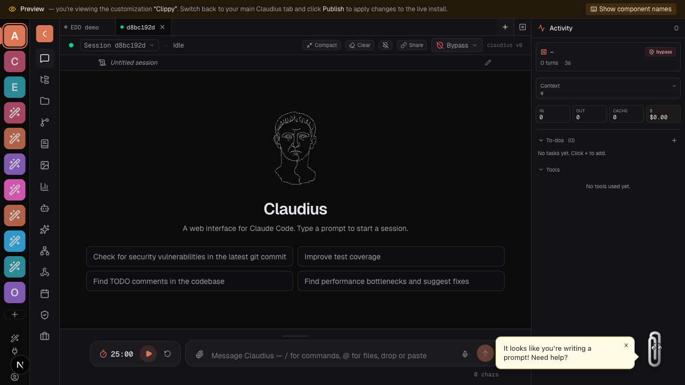
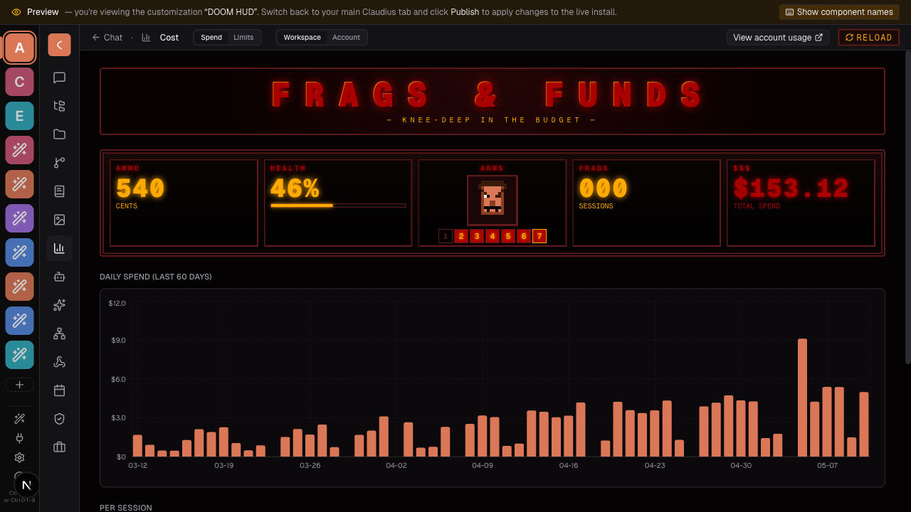
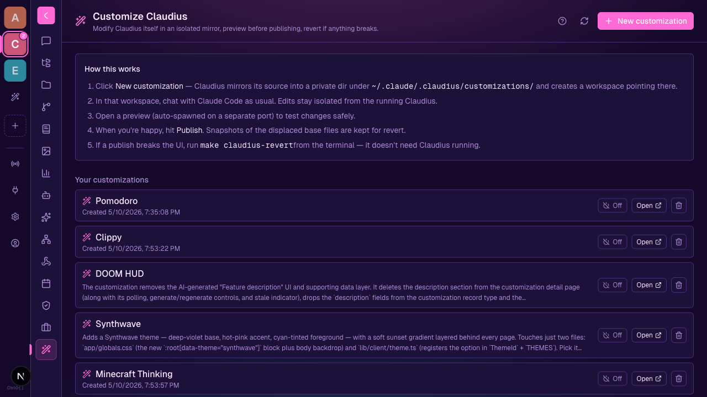
app/globals.css + lib/client/theme.ts.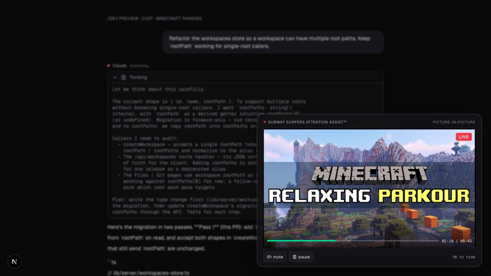
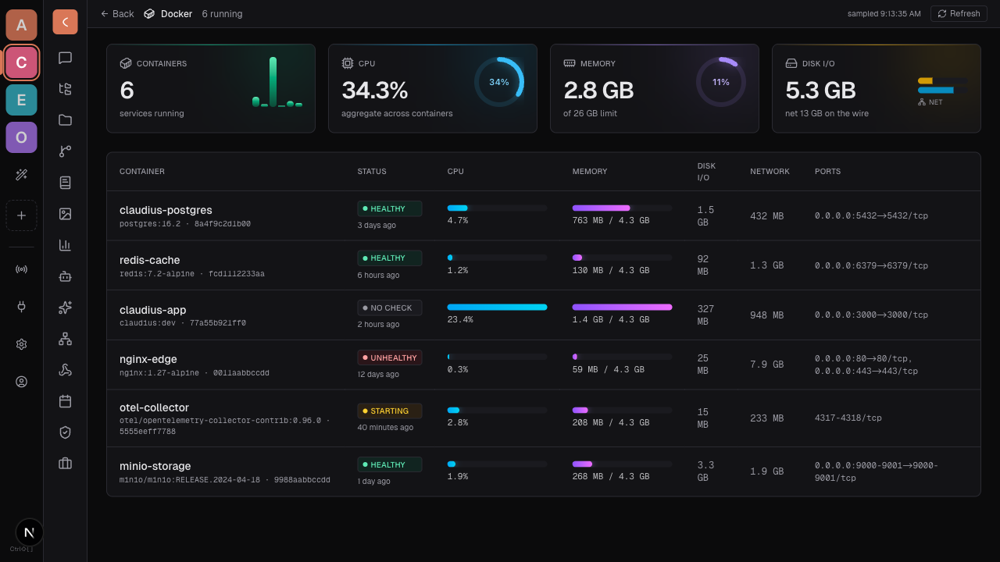
/docker route that polls docker ps + docker stats every five seconds. Aggregate cards, per-container CPU/MEM gradient bars, healthy/unhealthy/starting badges.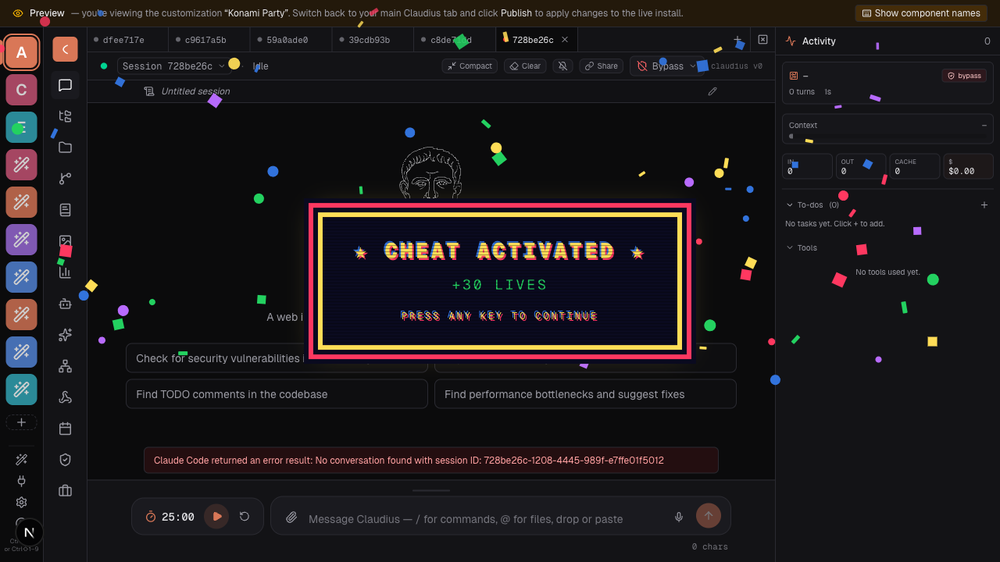
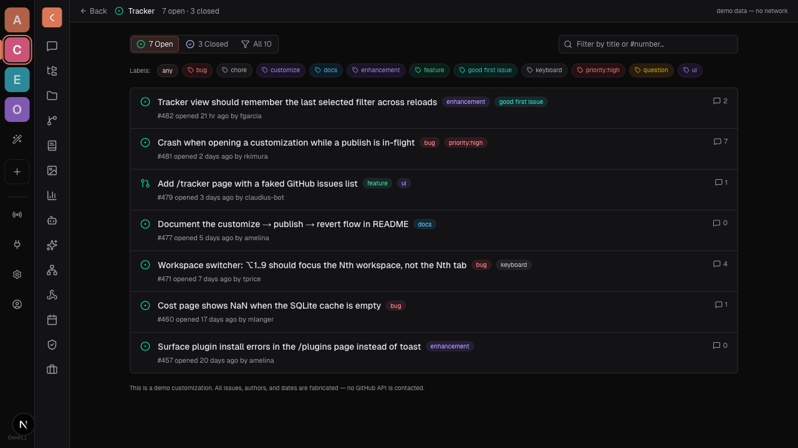
/tracker route that paints a GitHub-issues dashboard from local fixtures — state pills, colored label chips, title search, opened-by-author timestamps. No network calls; swap the fixture array for a fetch to wire it up for real.~/.claude/.claudius/customizations/.
If a bad publish breaks the UI, run
make claudius-revert
from a terminal — the CLI has zero runtime dependencies, so
it works even when Claudius itself won’t boot.